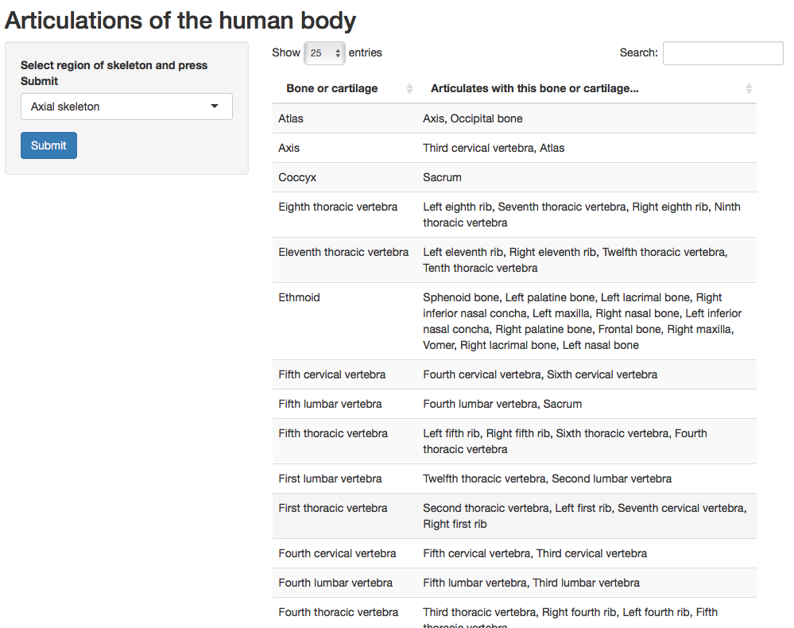

Bones which connect to each other through a joint are said to "articulate". Skeletal cartilage, such as the costal cartilages of the ribs, also articulate with bones.
Melissa Clarkson
Bones which connect to each other through a joint are said to "articulate". Skeletal cartilage, such as the costal cartilages of the ribs, also articulate with bones.
The list of articulations in this data file comes from the Foundational Model of Anatomy (FMA) ontology, which is a representation of human anatomy in a form that is both human-readable and computer-parsable.
I performed a SPARQL query over the FMA to retrieve all pairs of articulations. I then manually annotated the each line of the file to add the region of the skeleton. This allows the user to select a region of the skeleton for which to list the articulations.
Here are the seven regions of the skeleton I annotated:
artData <- read.csv("FMA_articulations.csv")
skeletalRegions <- unique(artData$region)
skeletalRegions
## [1] Axial skeleton Skeleton of left lower limb
## [3] Skeleton of left upper limb Skeleton of right lower limb
## [5] Skeleton of right upper limb Bones of left middle ear
## [7] Bones of right middle ear
## 7 Levels: Axial skeleton ... Skeleton of right upper limb
